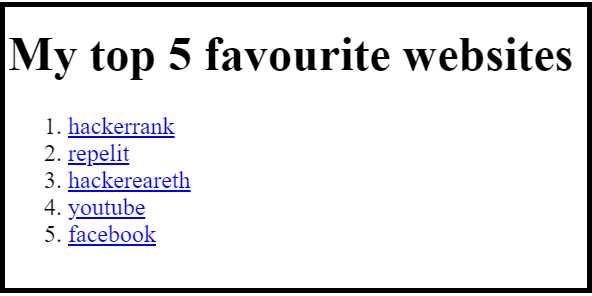
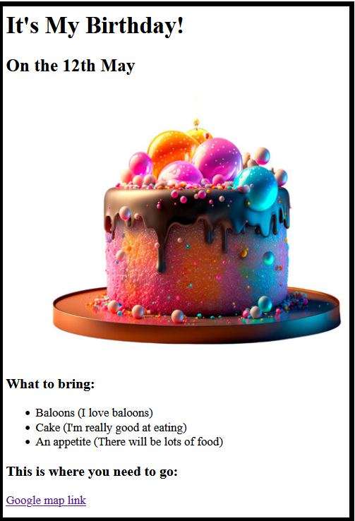
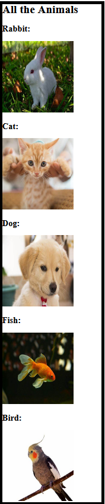

This is a portfolio website of paras kamal
Projects created:
Project-1
This project includes favouorite websites of Paras.
Below are the link to access the project
Project-2
This project includes Birthday invite including location.
Below are the link to access the project
Project-3
This project includes images of dog,cat,fish etc.
Below are the link to access the project